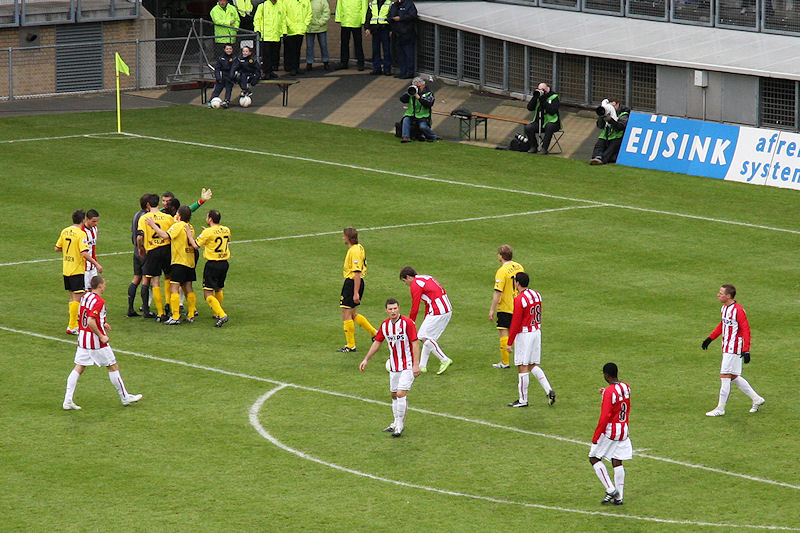

Alweer lukt het PSV niet om het gastenvak vol te krijgen.
De openingsfase is voor PSV dat aardig wat kansen krijgt zoals dit schot van
Bakkal.

Vlak voor rust kan Janssen van dichtbij inkoppen maar de ingevallen doelman
Ramos staat goed opgesteld.
Corner van Bodor wordt fraai ingekopt door Janssen.
Afellay kopt de inzet echter van de doellijn.
Cissé speelde een prima wedstrijd. In de eerste helft werd hem een penalty
onthouden. Hier zoekt hij weer de zestien op alwaar hij een
fopduikje maakt.
Prima redding van Castro op een schot van Lazovic.
Bakkal schiet de bal keihard in het gezicht van Kah.

Wegereef, aangemoedigd door het ageren van de gloeilampen, ziet er een
penalty in. ON-GE-LOOF-LIJK !!!
Simons verzilvert het cadeau hoewel Castro er nog goed bij zit: 0-1, (60').
Nog in dezelfde minuut is Jannsen, doelman Ramos te snel af met een kopbal
die doel treft: 1-1. (60').
Ha ha, sta op als je voor Roda bent. Maar dit boertje bleef natuurlijk
zitten LOL.
Na superieur voorbereidend werk van Cissé legt deze de bal panklaar af op
Hadouir...
Hadouir verprutst deze top-kans door de bal over te schieten.
Met deze nieuwe bril kan Jos eindelijk de persconferentie goed volgen.
Jeugdige fan op de foto met de doelpuntenmaker Willem Janssen.
Treebeek smokkelde een PSV'er de Kickoff binnen.
Het "duw de auto uit de pratsj"-team. Danke!